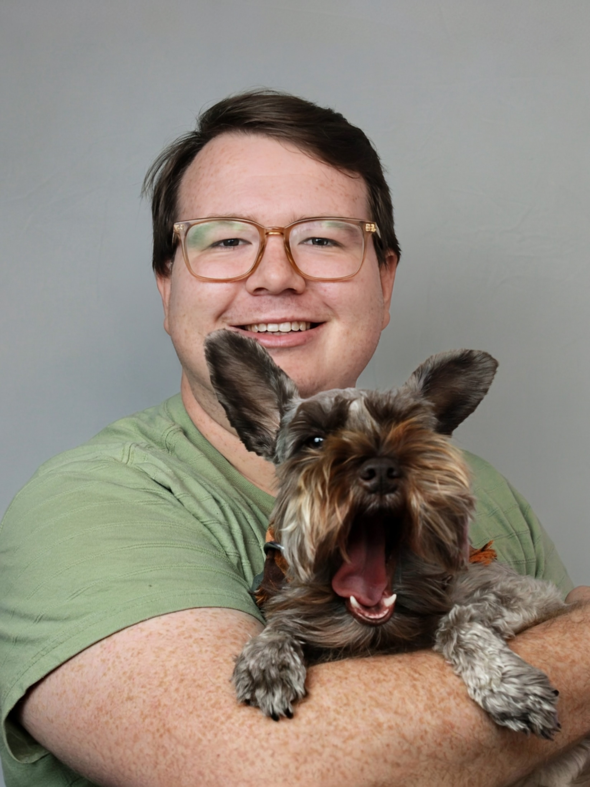
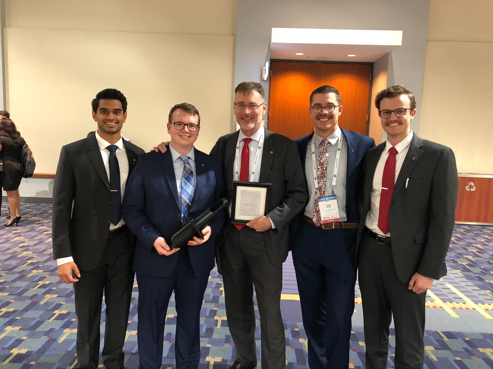

Noah Gula
About Me
Photograph of me in 2018 at the rooftop garden at The Ohio State University's Knowlton School of Architecture.
The following attempts to provide an abbreviated description of my background and interests, along with a few notable experiences. This isn't really a resume, but it does give a glimpse into my professional life and perhaps why I find those experiences interesting.
I believe life is a constant journey of learning and growth, and I strive to embrace new experiences and perspectives. Beyond my professional pursuits which you may read about below, I find joy in exploring the natural world and find that I am the most fulfilled when I am cooking for others. I am always seeking to expand my knowledge and challenge my assumptions. My personal motivations stem from a deep curiosity about the world and a desire to make a positive impact, however small. I approach life with humility, recognizing that there is always more to learn and discover.
Notable Experiences
Rocket Engine Materials and Processes
I spent the first couple years of my career at Firefly Aerospace trying to figure out how to build the Miranda rocket engine, which is a 230 klbf LOx/RP-1 tapoff cycle engine. My job, essentially, was to translate the drawings into something that would not only hurt your toe if you dropped it, but also supply enough ΔV to deliver the launch vehicle's cargo to the right orbit. My responsibility, as a materials and processes engineer, was to design the materials which the engine would comprise and form the processes by which we built the engines. This meant I was more so concerned the materials science of the engine, rather than the logistics of how the engine is assembled, for instance. My role was to identify the best materials to use, what thermal processing and heat treatments to employ, what quality control measures would ensure soundness, find and audit the most competent suppliers, and at the end of the day, make sure the engine was built to the right specifications.
My background as an aerospace engineer, previously working as a propulsion engineer on Firefly's other engine programs, offered me a unique perspective on how the design of the system responded to different materials and processes. This afforded me the ability to anticipate challenges and opportunities in the design of the engine, and therefore to find unique solutions to a problem that Firefly had never attempted to solve — this was the biggest, most powerful rocket engine Firefly had ever designed, by an order of magnitude or more. Along with that, I spent my time writing material specification, conducting failure analyses, and developing manufacturing and quality assurance processes for the engine production line.
Additive Manufacturing Research
In graduate school, I worked at the Center for Design and Manufacturing Excellence as a graduate research associate. During this time, I primarily worked with powder bed fusion and directed energy deposition additive manufacturing modalities, and was fortunate enough to operate all eight of our machines. My training at the CDME was essential for developing my understanding of how to use materials in engineering projects, and was more foundational than perhaps any of my classroom experiences.
Along with the hands-ons aspect of my work, I also gained experience performing formal research for federal grants from the America Makes consortium, writing proposals, and analytical studies of additive manufacturing process parameters and their relationship to materials.
Nuclear Thermal Propulsion
In 2022, I graduated from The Ohio State University with a masters of science degree in aerospace engineering. My thesisGula, Noah. "Optimization of Nuclear Thermal Propulsion Cooldown Using Real-Time Simulations: Experimental Approach." Master's thesis, Ohio State University, 2022. http://rave.ohiolink.edu/etdc/view?acc_num=osu1649886759436432 involved investigating propellant consumption of nuclear thermal propulsion systems during their cooldown phase of operations. The goal was to construct a test facility which replicated the non-nuclear environment (particularly the thermal conditions and fluid interactions) of a tie tube element and study how its temperature responded to differing propellant consumption conditions.
The work built upon the research of former graduate student, Jack Plank, who developed a computational model of the system. My goal was to supply experimental grounding and assess the validity of his model. To that end, the test facility comprised the tie tube element, coolant feed system, heating system, and required instrumentation and data acquisition. The experiment sought to prove that for a certain decay heat level, there exists a particular and measurable propellant mass flow rate which maintains the outlet flow temperature at a prescribed value. This extends to validate Plank's thesis that for a certain outlet flow temperature and corresponding inlet conditions, the nuclear moderator element's temperature is also known, and therefore can be maintained.
In addition to the experimental work, infrastructure was developed to provide the means to implement real-time simulations of the system to predict the optimal mass flow rate for the measured conditions. This was done using Python and openFOAM to simulate the system's heat transfer and fluid dynamics. Outputs from the simulations were then translated to control signals for the test facility and the experimental and computational results compared.

Workforce Development Policymaking
I worked for the Battelle Center for Science, Engineering, and Public Policy at The Ohio State University's John Glenn College of Public Affairs as a graduate research associate. Through this role and with my research partner Maya Perlmutter and advisor, Elizabeth Newton, I performed strategic policy analyses and stakeholder landscape investigations on challenges facing America's hypersonic workforce development, through a federal grant awarded to the Center by the Naval Surface Warfare Center, Crane Division.Gula, Noah; Perlmutter, Maya; and Newton, Elizabeth. "Sustaining Innovation: A New Framework from a Case Study on Hypersonics." International Astronautical Congress, 2021. https://dl.iafastro.directory/event/IAC-2021/paper/66564/ The sponsoring organization adopted several of our policy recommendations.
Positive Expulsion Propellant Management
Photograph of the "piston tank team": Shreyas Doejode, myself, John Horack (advisor), Tyler Schell, and Jordan Lombardo, at the 2019 International Astronautical Congress after we presented our work.
Some of my first formal research experiences related to a project I lead with a few of my classmates at The Ohio State University, involving positive expulsion propellant management. We developed a bi-propellant piston tank pressurization system for spacecraft, where precision and predictability of propellant mass flow are critical. Although piston pressurant systems are not necessarily new, we extended the concept to include a bi-propellant configuration which reduced the number of components in the system and therefore the amount of space and mass consumed.
The project emerged from our own curiosity, rather than from assignment. We were fortunate enough to be mentored by John Horack and Elizabeth Newton who not only provided us the resources and guidance to develop our ideas, but for me personally, taught me what it means to be a mentor. Eventually, our work was published at the 2019 International Astronautical Congress in Washington, D.C.Gula, Noah; Lombardo, Jordan; Schell, Tyler; Doejode, Shreyas; Noe, Jason; Newton, Elizabeth; Horack, John. "An Effective Piston Pressurization System for Spacecraft Bipropellant Tanks." International Astronautical Congress, 2019. https://dl.iafastro.directory/event/IAC-2019/paper/51473/, American Institute of Aeronautics and Astronautics Region III Student Conference, and became a perennial aerospace capstone project.
Software
I consider myself an interested but amateur software developer. Software tools play an important role in all aspects of my profession, and correspondingly, I enjoy tinkering and modifying software to suit my particular needs. Usually (but not always), I try to extend existing projects when they are available, but am not afraid of making something from scratch. This is true for a Python project called elematicelematic is available at github.com/nogula/elematic. which provides materials information management tools for engineers, and FigureForgeFigureForge is available at github.com/nogula/FigureForge. which is a graphical editor for matplotlib figures.
Truth be told, I am a professional aerospace engineer; I do not know how to develop professional software, but I am doing my best — especially because the projects I work on serve to solve my own problems. That said, I am interested in learning about open source software and reaching more people with my projects: a driving principle is that I can't be the only one with these pain points.
Eagle Scout
In July, 2015, I was awarded the rank of Eagle Scout in the Boy Scouts of America.